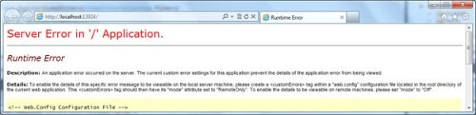

使用ASP.NET MVC 3
Introduction to ASP.NET MVC 3 framework and how to create an application using ASP.NET MVC 3,A deeper look into the two pillars of ASP.NET MVC – Routers and Controllers.,A deeper look into different Actions, Action filters, and selectors used inside a Controller.
Introduction
ASP.NET MVC framework follows the well-defined MVC pattern to create a web application. MVC design pattern is used to separate the different parts of the application for more scalability, extensibility and testability purposes.
One of the major challenges with normal web forms is the testability of the business logic. Unit test of code-behind logic is very complex. Also, the extensibility of the application required a lot of re-work on the application. ASP.NET MVC addresses the pain points associated with the traditional web form applications.
In this article, we will discuss about how to create an MVC application and understand the Controller, Views & Models.
MVC
MVC means Model View Controller. Controller takes care of the overall execution of a request. Controller receives the request from the web server and identifies the data requirements. Depending on the data requirements, Controller contacts the corresponding Model. Model will supply the required data, which will be rendered to the UI using a View.
For working with ASP.NET MVC, we can install the Web Platform Installer, which consists of Visual Studio 2010 Express for coding the MVC application, SQL Server Express for storing the data and IIS Express for hosting the application. We can download the Web Platform Installer from Microsoft Web Platform Installer 3.0.
- Create an ASP.NET MVC Application
- Let us start our discussion by creating the first MVC application. File-> New Project and select the ASP.NET MVC 3 Web Application template.
- This will open the new ASP.NET MVC 3 Project window.
- Select either Empty or Internet Application. Empty will
create a blank application. Internet application will create an application
with few default pages. For our sample, I will select the Internet
Application option.We can choose to create a test project along with
our MVC application from the same window. Also, we can choose the
View Engine as ASPX or Razor. ASPX is for backward compatibility.
Our new solution will look like:
- We have different folders to hold the Controllers, Views
and Models. As we selected Internet Application, our application is
a fully functional application. We can run it and see the pages.
It opens a small application with two tabs, Home and about. Also, we have the option to Log On, from where we can register a new User.
- When you select the About tab, it goes to the HomeController
and returns a View using the About() method. About() is not specified
any View name, so the controller will goes to the Views and find the
directory corresponding to the HomeController. Here also, it uses
the name of the controller to find the corresponding directory. Then,
the controller checks whether it contains any view with the name About.
- We can specify a View name in the About() method like:
publicActionResult About() { return View("Index"); }Now, both Home and About display the same content.
- Data Passing from Controller to View
Now, let us see how we can pass some information to the View from Controller. There are two ways to pass data from Controller to View.
- Using ViewBag
ViewBag is a dynamic object, where we can add any properties dynamically.
For example, if I want to pass some contact information like Name and Contact number to About View from the Home controller, we can define it using the ViewBag as:
This data will be accessed in about.cshtml as:
@{ ViewBag.Title = "About Us"; } <h2About</h2 <divContact person : @ViewBag.ContactPerson Contact Number : @ViewBag.Contactnumber</div>注：Note that the dynamic properties added are not case sensitive. Also, it won’t throw any exception, in case of a wrong dynamic property reference.Now, our About tab looks like: - Using Model
Now, let us see how we can pass data using a Model. Define a Model class and specify the required properties. Our sample Model class looks like:
namespaceSampleApp.Models {public classContactAddress {public string Address { getset; }public string City { get; <br />set; }public string Country { getset; } } }Now, let us construct the Model in Controller and pass the same to our View:
publicActionResult About() {var address = new ContactAddress() { Address = "Lane 21, Gachibowli", City = "Hyderabad", Country = "India"};return View(address); }Now, we will use the same in our View. In View, we have another object called Model, which holds the dynamic properties like ViewBag. We can extract the model properties using Model.
@{ ViewBag.Title = "About Us"; } <h2>About</h2> <div> Contact Address: @Model.Address, @Model.City, @Model.Country </div>Now, our About tab looks like: - Notice that there is no intellisense support for the
Model properties. We can define the type of the expected model on
top of the View, which will gives the Intellisense support for the
Model object.
we discussed about the ASP.NET MVC framework, how to create a basic MVC application and discussed about the Controller to View communication. We have a lot more to discuss in MVC like the Content folder holding all images and styles, Scripts folder with jQuery scripts and MVC detail. We will discuss the topics in detail later.
- Using ViewBag
- Routers
ASP.NET MVC provides a new way of creating web applications which is more extensible and testable.Here, we will have a deeper look into the two pillars of ASP.NET MVC – Routers and Controllers.
One of the main objectives of ASP.NET MVC is Search Engine Optimization (SEO). Search Engines work mainly using URLs. Defining a meaningful and more understandable URL is very important to make our application more search engine friendly.
Routing is the way of constructing meaningful URLs for a web request. As you have already seen, our MVC application URLs are not represented by extensions like .aspx. Instead, the URLs consist of the Controller name and Action name.
Let us first understand how the default routing works. Open the Global.ascx file, and we can see the Application_Start() and RegisterRoute() methods.
public static void RegisterRoutes(RouteCollection routes) { routes.IgnoreRoute("{resource}.axd/{*pathInfo}"); routes.MapRoute( "Default", // Route name "{controller}/{action}/{id}", // URL with parameters new { controller = "Home", action = "Index", id = UrlParameter.Optional } // Parameter defaults ); }Look at the statement where we map the routing. Our URL formation uses the pattern “{controller}/{action}/{id}", where id is an optional parameter.
new { controller = "Home", action = "Index", id = UrlParameter.Optional } specifies that in case the URL does not specify a Controller, use the Home Controller. Also, in the absence of an Action, it uses the Index action, and the last parameter is Optional.
- Routing data inside a Controller:We can access routing
data inside a Controller using the RouteData object.
public ActionResult Index() { ViewBag.Message = string.Format("{0}---{1}--{2}", RouteData.Values["Controller"], RouteData.Values["action"], RouteData.Values["id"] );return View(); } - Controllers:Now let us create a new Controller and see
how we can route to the new Controller using a different routing pattern.
- Add a new Controller using Add New Item -> Controller.
It adds a new Controller with an Action as Index. For our sample application,
we are using a different Action called Verify.
public class SampleController : Controller { // // GET: /Sample/ public ActionResult Verify() { return View(); } } - As there are no Views corresponding to SampleController,
let us return some text from our Action. For returning any text data
from an Action, use the Content class.
publicActionResult Verify() {return Content("Hello From Sample Controller."); }
Let us run the application. Modify the URL to /sample/verify.
But if we specify /Sample without any Action, we will receive a 404 error. As per the defined routing, if there is no Action specified, it should redirect to the Index action inside the specified Controller. Here, our SampleController doesn’t have any Index action and throws an error.
- Add a new Controller using Add New Item -> Controller.
It adds a new Controller with an Action as Index. For our sample application,
we are using a different Action called Verify.
- Adding a new route:
- For fixing the above issue, let us define a new route
called “sample”.
public static void RegisterRoutes(RouteCollection routes) { routes.IgnoreRoute("{resource}.axd/{*pathInfo}"); routes.MapRoute( "sample", "Sample/{action}", new { controller = "Sample", action = "Verify" } ); routes.MapRoute( "Default", // Route name "{controller}/{action}/{id}", // URL with parameters new { controller = "Home", action = "Index", id = UrlParameter.Optional } // Parameter defaults ); } - Now we may need to pass some data to our new Controller
from a URL, like the id parameter in the default routing. For that,
define a new parameter in the routing.
routes.MapRoute( "sample", "Sample/{username}", new { controller = "Sample", action = "Verify" } ); - The value can be accessed either using the RouteData
object or through a parameter to the Verify action.
public ActionResult Verify(string username) { return Content(username); }Note that the URL consists of only the Controller and the parameter.
Again, you will receive a 404 error when we omit the parameter value.
- For solving this issue, we need to specify the default
value for the username parameter either in the Route mapping or in
the Controller.In the route map, specify the parameter as optional.
routes.MapRoute( "sample", "Sample/{username}", new { controller = "Sample", action = "Verify", username=UrlParameter.Optional } );Inside the Controller, specify the default value for the parameter.
public ActionResult Verify(string username="all") { return Content(username); }
We had a quick discussion on how routing works in ASP.NET MVC and how we can customize the same. We will discuss more about Views, Styles, Action results, etc., in the next article. - For fixing the above issue, let us define a new route
called “sample”.
- Action Result:By default, the Controller actions will return
the ActionResult object. We can return various types of results as
ActionResult, which will decide how the output needs to render on
the browser.
public ActionResult About() { return View(); }Sample Controller
For our sample, we will use the following SampleController in addition to the default HomeController and AccountController.
public class SampleController : Controller { // // GET: /Sample/ public ActionResult Index() { return Content("Hello from Index action in Sample Controller"); } public ActionResult Verify(string username = "all") { return Content("Hello from Verify action in Sample Controller"); } }- Content:
When we need to return any text from a Controller action, we will use the Content type.
public ActionResult Index() { return Content("Hello from Home Controller"); } - RedirectToAction
Depending on the input values, we can redirect to another Action. For redirecting to another Action, we will use the RedirectToAction type.
public ActionResult Index() { // Redirect to Verify action inside the Sample Controller return RedirectToAction("Verify", "Sample"); } - RedirectToRoute
When we need to redirect to a route defined in Global.asax, we will use the RedirectToRoute object.
As part of our sample application, we have a custom route defined with the name “sample”. This will route to the Index action inside the Sample Controller. For more on Custom routes, please refer to Controllers and Routers in ASP.NET MVC 3.
public ActionResult Index() { return RedirectToRoute("sample"); } - File
File is used to return the content of a file to the browser. For our sample, I am returning the web.config to the browser.
public ActionResult Index() { return File("Web.config", "text/html"); } - JSON:We can render the text to the result page or can
send it as a file to the client using JSON notation.
public ActionResult Index() { return Json("hello from JSON","text/html", JsonRequestBehavior.AllowGet); }As we specified the type of the content, it will render to the browser as shown below:
public ActionResult Index() { return Json("hello from JSON", JsonRequestBehavior.AllowGet); }If there is no content type specified, it will download the content as a file.
- Content:
- Action Filters
There are a set of Action filters available with ASP.NET MVC 3 to filter actions. Action filters are defined as attributes and applied to an Action or controller.
- Authorize
Authorize filters ensure that the corresponding Action will be called by an authorized user only. If the user is not authorized, he will be redirected to the login page.
[Authorize] public ActionResult About() { return View(); }If the user is not authorized and invoke the About action, then he will redirected to the log on page.
- If we need the filter at the controller level, then
we can add the filter to the controller class itself.
[Authorize] public class SampleController : Controller { …………………………………………… }
- Authorize
- HandleError
HandleError will handle the various exceptions thrown by the application and display user friendly message to the user.
- By default, this filter is registered in Global.asax.
注：If any of the Action filters are added to the filter collection in Global.asax, then the scope of the filter is the application.
public static void RegisterGlobalFilters(GlobalFilterCollection filters) { filters.Add(new HandleErrorAttribute()); } - For verifying a filter, let us enable a custom error
in web.config:
<customErrors mode="On"/ - Now throw an exception from the Home Controller:
public ActionResult Index() { throw new Exception("Verify the HandleError filter"); ViewBag.Message = "Welcome to ASP.NET MVC!"; return View(); }Now run the application and observe the custom error message:
- This View is defined under Shared Views. We can change
the error message using the Error.cshtml file.
- Now, let us remove the filter from Global.asax and verify
our application. We will receive the following server error:

- Now, let us update the CustomError tag to RemoteOnly
and verify our application. Now we can see this error message thrown
by the application:
- We can specify the HandleError filter for an Action
or a controller.
ASP.NET MVC defines Action filters like OutputCache, ValidateInput, etc., as part of ASP.NET MVC 3, which we will discuss later.
- By default, this filter is registered in Global.asax.
- Action Selectors
ASP.NET MVC 3 defines a set of Action selectors which determine the selection of an Action. One of them is ActionName, used for defining an alias for an Action. When we define an alias for an Action, the Action will be invoked using only the alias; not with the Action name.
[ActionName("NewAbout")] public ActionResult About() { return Content("Hello from New About"); }ASP.NET has more Action selectors like HTTPPost and HTTPGet, which we will discuss later.
Here we had a quick discussion of the various Action result options and Action filters. We will discuss more about Views, Styles, etc., in the next article.